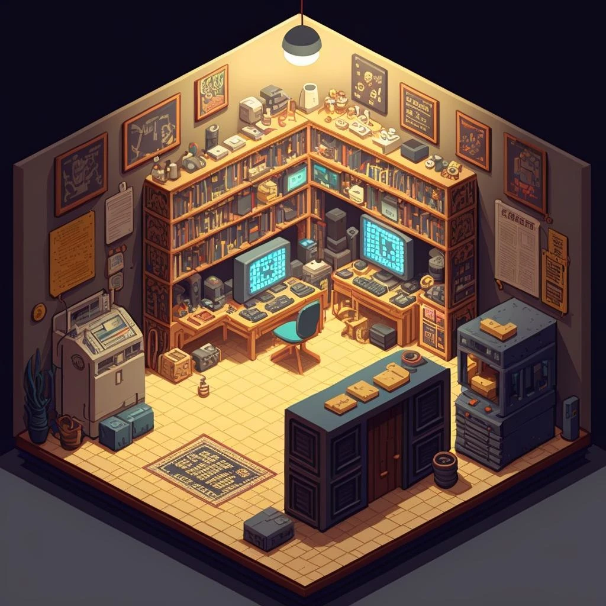

PERSONAL WORKSPACE EST. 2026
KO LAB
KERVIN'S DEVELOPER LAB
A small room for big ideas.
Systems, graphics and security projects—built and explored here.
Click an object in the room to explore.
← Classic portfolio
KO LAB / APPS/NETLENS.EXE
PROJECT / SOFTWARE